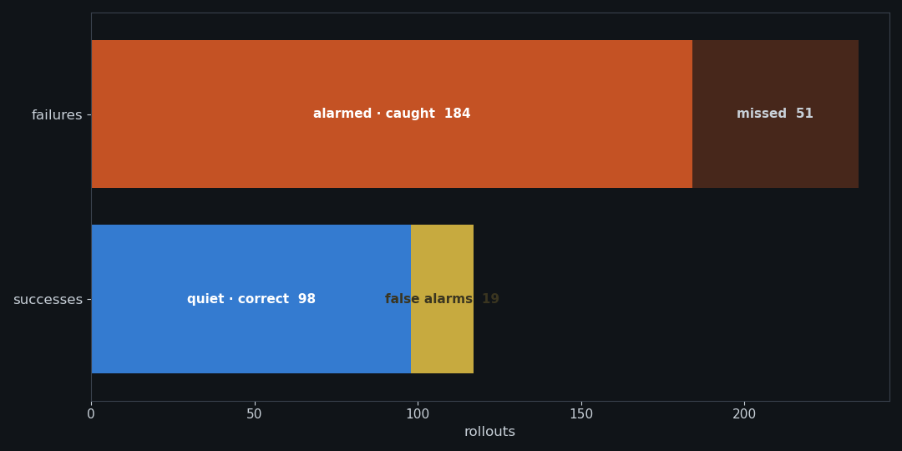
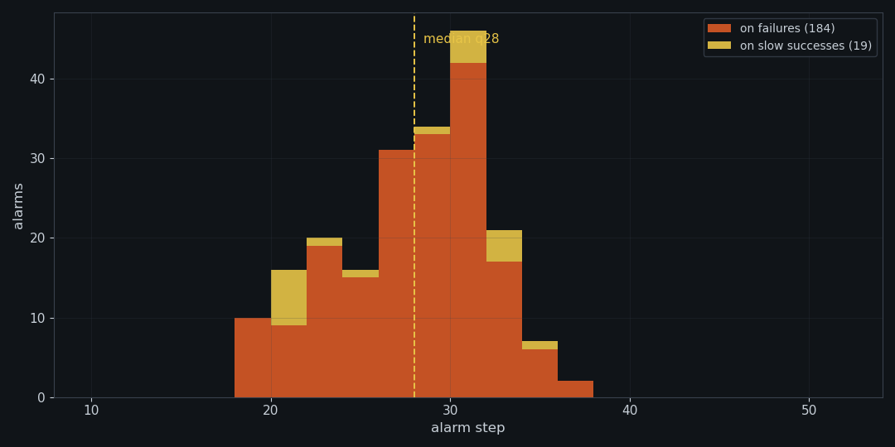
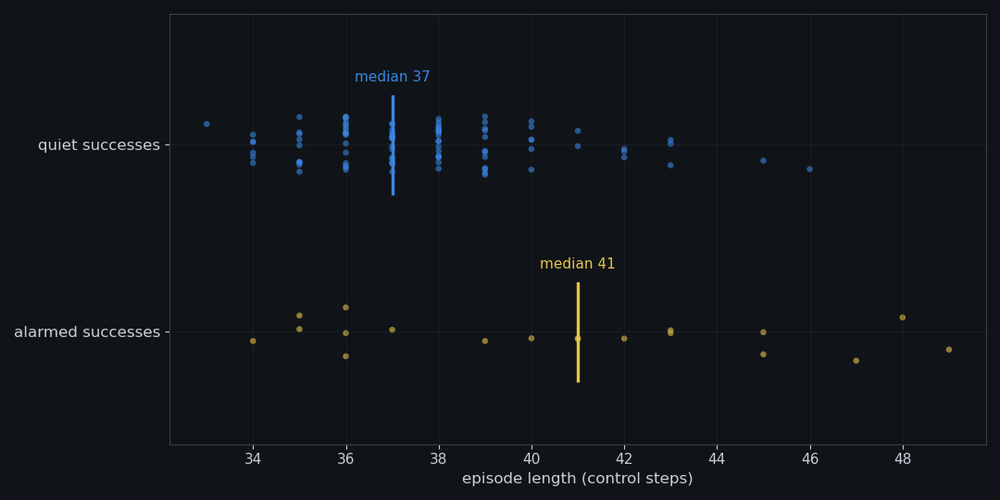

一台会做饭的机器人
HiMoE-VLA,π0 型 VLA:看一眼画面,吐出 10 帧关节动作,每秒二十个。任务来自 LIBERO-10 SCENE8 —— 把两只摩卡壶先后放上炉架。
缘起
先讲一件推理大模型上的旧事:我们做过一个叫 NAD 的探针,在模型给出的多条候选答案之间,不读一个字,光凭神经元的活动就能挑出更可能对的那条。把握与犹豫没有写进 token,但内部状态里有。同一个思想换到具身智能的场景下:VLA 大模型的内部,会不会也有类似的信号呢?
HiMoE-VLA,π0 型 VLA:看一眼画面,吐出 10 帧关节动作,每秒二十个。任务来自 LIBERO-10 SCENE8 —— 把两只摩卡壶先后放上炉架。
不是答错题 —— 是手臂悬在半空一格不动,或把壶拿起又放下、在两壶之间来回打转,直到 52 步超时。
它的骨干带 MoE:每步、每层,路由器从 32 位专家里点亮 4 位。如果 NAD 的思想成立,冻结的把握感也该写在这份点名册上。
物理世界
固定同一个初始状态,只让采样噪声不同,跑 32 条:14 条成功,18 条把同样的动作重复到超时。有的悬停不动,有的原地打转 —— 两副面孔,同一件事:困在 trap 里。而动作流上,什么都看不出来。

卡住的每一步,模型照样吐出幅值正常的 10 帧动作 —— 从动作序列上分不出「在干活」和「在空转」。
成功要等布尔判定在最后一刻翻真;而「长」既可能是慢成功,也可能是快失败 —— 长度本身两解。
悬停也好、打转也好,动作流上读不出分别 —— trap 不写在动作里。下一节,我们去神经元里找。
神经元
每个控制步,路由器都会在 32 位专家中点亮 4 位 —— HB 12–15 每层、11 个动作 token,合在一起,构成模型此刻思考的形状,我们称之为 pattern。最初我们试图从「谁被点亮」里读出异常,但身份给不出答案:它只是场景的指纹,换一个初始状态便整体重排。有意义的是它的动力学 —— 顺利时,pattern 随世界一步步更迭,思路在流动;受困时,更迭戛然而止,同一组神经元被反复点亮,思考凝固在同一个瞬间。信号不在内容里,在流动里。

警示器
换一副眼镜:把每一步的 pattern 看作相空间里的一个点 —— 每层、每个 token,一步落在 C(32,4) = 35960 个格点之一 —— 一条 rollout,就是这空间里的一条轨道。干活时,轨道持续穿行;陷入 trap,轨道塌缩进一个不动点。警示器要做的,只是给这条轨道装一只测速计:
相邻两步的集合距离 1 − |∩|/|∪|,就是轨道这一步挪了多远 —— 离散相空间里的速度,平均成一个数,记作 ds。它天然不认坐标的名字,只认位移。
每条轨道有自己的巡航速度,相空间里没有普世的刻度。所以拿轨道自己开头 W₀=8 步的均速做单位,近 W=4 步的均速除以它:r(t) 跌破 1,说明轨道正在减速、塌向某个不动点 —— 这就是滑向 trap 的样子。
连续 K=3 个控制步 r(t) < θ=0.95 —— 判定轨道已被吸进不动点邻域,拉响。不设豁免、不看情境;四个常数在救援实验之前冻结,换数据不重调。
这只警示器不认识任务,只认得轨道 —— 对整个相空间,它只问一句:这条轨道,还在动吗?我们做一个比喻,就像是给模型贴了一台心电监护:心跳一停,它就出声。
结果
在线测试,跨不同任务、不同初始状态,共 864 条 rollout。警示器不看画面、不看动作、不看任务标签 —— 只盯 pattern。
巡航区和不动点之间,隔着一段宽阔的缓坡:θ 画在坡上哪儿,误报率都平滑变化,没有断崖。这套常数挪一挪,结论不塌。
误报几乎全来自慢成功 —— 那些减速、擦着不动点引力边缘、又自己爬回巡航区的轨道。警示器在它们最慢的那几步点名,并不冤枉:那一刻,它们确实正滑向 trap。所以警报读作「正在下坠」,而不是「必然坠毁」—— 急救实验用的正是这个读法。




卡住 → 观测不变 → 路由器输入不变 → 专家不换 —— 这只报警器听的,是「世界停了」在神经元里的回声。但对一台本该把壶放上炉架的机器人,世界不该停:每一步它都在输出幅值正常的动作,而世界纹丝不动 —— 说明动作本身就是不合理的。「世界停了」不是外界的天气,是模型自己造出的不动点:模型 → 动作 → 世界 → 观测 → 模型,整个环锁死在原地。报警器听到的,正是这个环空转的声音 —— 也因此它可靠、便宜、跨场景:判决不需要读懂任务,只需要听出空转。
共 864 条 rollout · 4 层 · 32 专家 · top-4 HB12–15 × 11 action tokens · 第 9 去噪步 · 1 控制步 = 10 帧 = 0.5 s · LIBERO-10 SCENE8
急救!!
检测是离线的裁判,救援是在线的赌:让冻结的检测器盯一条直播 rollout,q32 拉响 → 冻结状态 → 只加一些干扰,比如大幅度改换采样噪声 → 继续。其余一切不动。一脚把轨道踢出不动点的引力盆,看它能不能自己爬回巡航。
总结
detector top-4 set-overlap distance, HB12–15 × 11 action tokens, denoise 9 r(t) mean(last W=4) / mean(own first W0=8) alarm K=3 consecutive control steps with r(t) < θ=0.95 frozen constants fixed before the rescue run; never tuned on it corpus 864 rollouts · one frozen set of constants result 81.2% correct online (majority baseline 61.5%) alarms archived batch: 203 = 184 hits + 19 false alarms · q18–q36, median q28 recall 80% of failures · false-alarm 17% rescue alarm q32 → resample noise → 3/8 succeed · 8 vs 52 steps · 26.0 s → 3.9 s limits other init 0/8 · random-step also 3/8 · magnitude picks no winner (n=1)
token 之外,神经元还记着另一份实况。Outside the tokens, the neurons keep their own record.